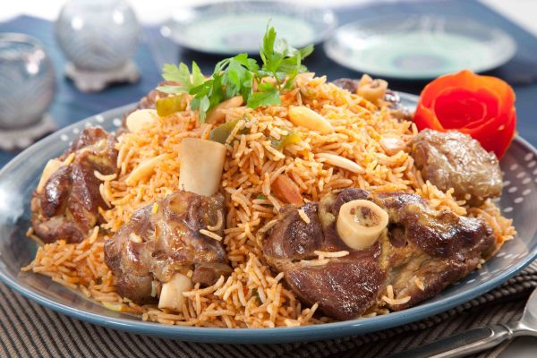

Kabsa
Kabsa is a traditional Saudi Arabian dish that holds a place of honor in Middle Eastern cuisine, revered for its aromatic spices and robust flavors.
Originating from the Arabian Peninsula, Kabsa is a hearty rice dish typically made with long-grain Basmati rice, tender meat—often chicken, lamb, or goat—and a medley of spices that lend it a distinctive taste and aroma.
What sets Kabsa apart is its fragrant spice blend, which typically includes cardamom, cinnamon, cloves, black lime, bay leaves, and nutmeg, among others.
The preparation of Kabsa often involves slow-cooking the meat with the spices until it becomes tender and infused with the rich flavors of the spices.
The rice is then cooked separately and flavored with the same spice mixture, allowing it to absorb the essence of the meat and spices.
Once cooked, the rice is layered with the meat and served with a garnish of toasted almonds, pine nuts, and fresh herbs, such as parsley or cilantro.
Kabsa is typically enjoyed with a side of tangy tomato salsa, known as "dakous," which adds a refreshing contrast to the richness of the dish.